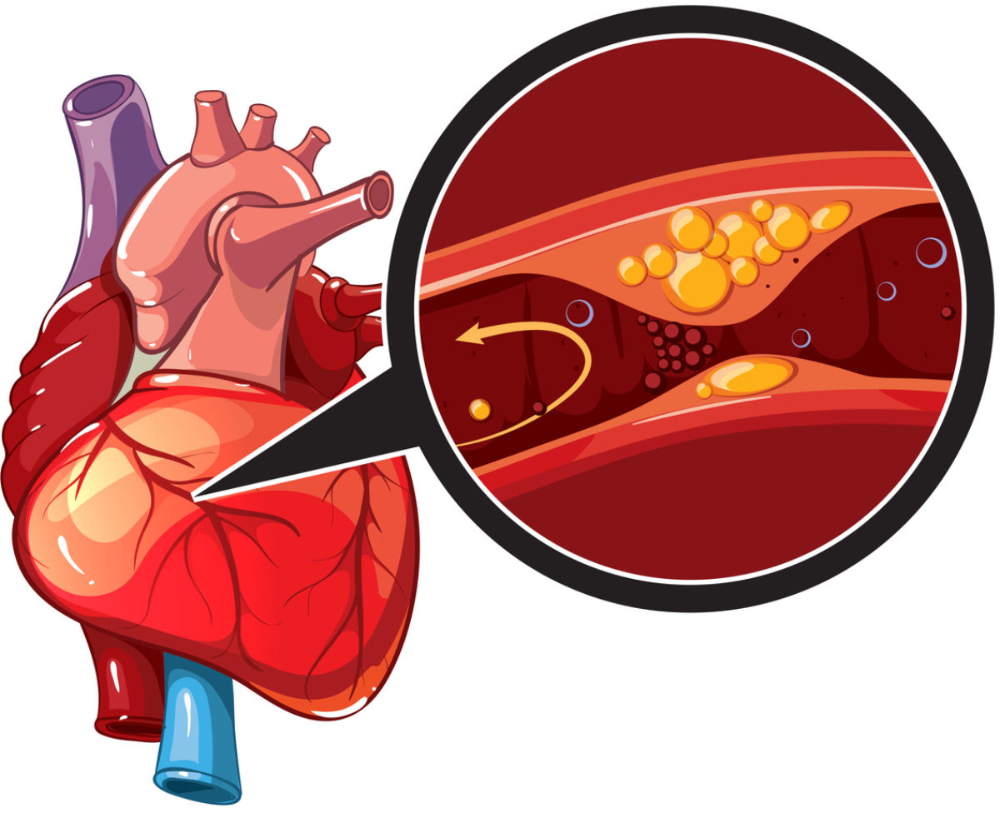
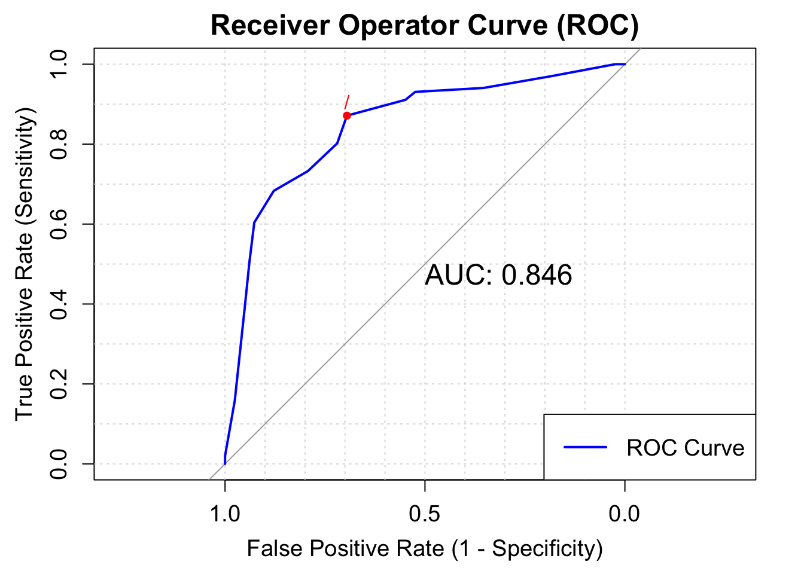
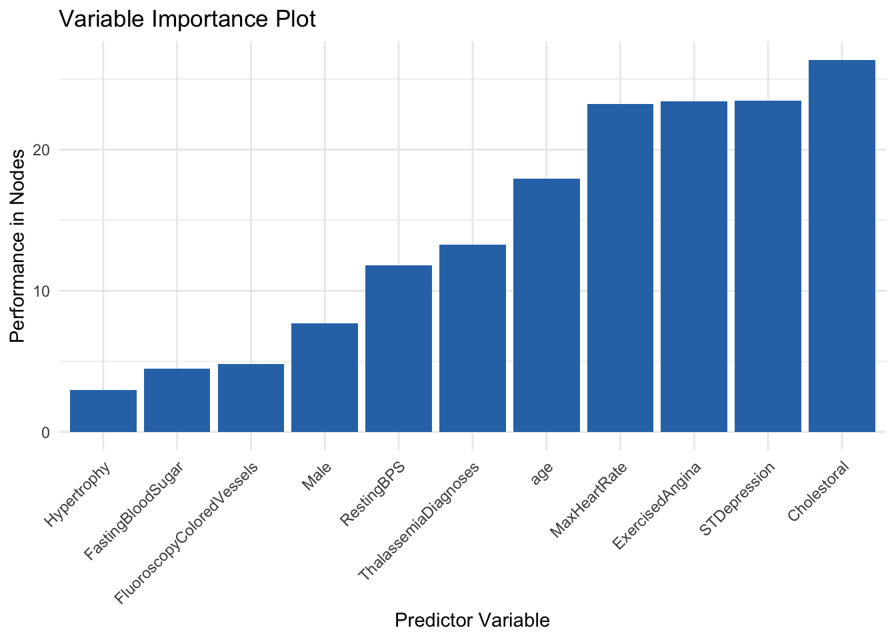

set.seed(081302)
library(caret) #for knn, trees, regression, ANN
library(caretEnsemble) # for regression
library(dplyr) #for cleaning data
library(earth) # for regression
library(ggcorrplot) # for plotting
library(ggplot2) #for plotting
library(glmnet) #for regression
library(gridExtra)#for regression
library(kernlab) # for regression
library(mlbench) #for trees, regression
library(neuralnet) # for ANN
library(party) #for trees
library(partykit) #for trees
library(pROC) #for knn
library(randomForest) #for regression
library(readr) #for reading data
library(rpart) # for regression
library(skimr) #for examining dataPredicting Heart Disease with Machine Learning
Introduction
Heart disease can pertain to a range of conditions that affect the heart and its purpose of pumping blood throughout the body. Generally, heart disease is diagnosed when direct blood flow to the heart, before it is pumped by the heart to the rest of the body, is compromised. Since the 1950’s heart disease has been the leading cause of death in America. The Center for Disease Control (CDC) estimates that one person dies of heart disease around every 33 seconds.
The UC Irvine Machine Learning Repository has provided access to four databases. Two in America, a Cleveland hospital and the VA in Long Beach, California, as well as hospitals in Hungary and Switzerland. The four databases can be combined imported in Python, then combined using SQL to make one complete dataset. The dataset has hundreds of observations and 14 variables. For each patient: age, sex, cerebral palsy, resting blood pressure, cholesterol, fasting blood sugar above 120mg/dl , resting cardiography measurement, maximum heart rate, exercised induced angina, presence of ST depression, heart rate slope, number of blood vessels colored in a fluoroscopy, thalassemia diagnoses, as well as if the doctors at each corresponding hospital diagnosed the patient with heart disease.
The dataset can be found at: https://archive.ics.uci.edu/dataset/45/heart+disease
The following are the required packages for the entire analyses:
Feature Engineering of Data
For simplifying conclusions, the heart disease diagnoses will be binned so that a patient is either diagnosed with heart disease or not (two options). Variables will be renamed so that they are easier to interpret in code.
HDdf <- read_csv("heart_disease_uci.csv") #reading in the CSV
#Updates data so that heart disease diagnoses is a two factor variable
HDdf <- within(HDdf,{num<-factor(num, labels = c("No","Yes","Yes","Yes","Yes"))})
#renaming variables so that they are easier to understand at a quick glance
names(HDdf)[names(HDdf) == "cp"] <- "CerebralPalsy"
names(HDdf)[names(HDdf) == "chol"] <- "Cholestoral"
names(HDdf)[names(HDdf) == "fbs"] <- "FastingBloodSugar"
names(HDdf)[names(HDdf) == "restecg"] <- "RestingECGReading"
names(HDdf)[names(HDdf) == "exang"] <- "ExercisedAngina"
names(HDdf)[names(HDdf) == "trestbps"] <- "RestingBPS"
names(HDdf)[names(HDdf) == "thalch"] <- "MaxHeartRate"
names(HDdf)[names(HDdf) == "oldpeak"] <- "STDepression"
names(HDdf)[names(HDdf) == "slope"] <- "STSlope"
names(HDdf)[names(HDdf) == "ca"] <- "FluoroscopyColoredVessels"
names(HDdf)[names(HDdf) == "thal"] <- "ThalassemiaDiagnoses"
names(HDdf)[names(HDdf) == "num"] <- "HeartDisease"
#saves data as a data frame
HDdf <- as.data.frame(HDdf)Basic summary statistics can be conducted to gather a better understanding of the dataset.
skim(HDdf)| Name | HDdf |
| Number of rows | 920 |
| Number of columns | 14 |
| _______________________ | |
| Column type frequency: | |
| character | 5 |
| factor | 1 |
| logical | 2 |
| numeric | 6 |
| ________________________ | |
| Group variables | None |
Variable type: character
| skim_variable | n_missing | complete_rate | min | max | empty | n_unique | whitespace |
|---|---|---|---|---|---|---|---|
| sex | 0 | 1.00 | 4 | 6 | 0 | 2 | 0 |
| CerebralPalsy | 0 | 1.00 | 11 | 15 | 0 | 4 | 0 |
| RestingECGReading | 2 | 1.00 | 6 | 16 | 0 | 3 | 0 |
| STSlope | 309 | 0.66 | 4 | 11 | 0 | 3 | 0 |
| ThalassemiaDiagnoses | 486 | 0.47 | 6 | 17 | 0 | 3 | 0 |
Variable type: factor
| skim_variable | n_missing | complete_rate | ordered | n_unique | top_counts |
|---|---|---|---|---|---|
| HeartDisease | 0 | 1 | FALSE | 2 | Yes: 509, No: 411 |
Variable type: logical
| skim_variable | n_missing | complete_rate | mean | count |
|---|---|---|---|---|
| FastingBloodSugar | 90 | 0.90 | 0.17 | FAL: 692, TRU: 138 |
| ExercisedAngina | 55 | 0.94 | 0.39 | FAL: 528, TRU: 337 |
Variable type: numeric
| skim_variable | n_missing | complete_rate | mean | sd | p0 | p25 | p50 | p75 | p100 | hist |
|---|---|---|---|---|---|---|---|---|---|---|
| age | 0 | 1.00 | 53.51 | 9.42 | 28.0 | 47 | 54.0 | 60.0 | 77.0 | ▁▅▇▆▁ |
| RestingBPS | 59 | 0.94 | 132.13 | 19.07 | 0.0 | 120 | 130.0 | 140.0 | 200.0 | ▁▁▅▇▁ |
| Cholestoral | 30 | 0.97 | 199.13 | 110.78 | 0.0 | 175 | 223.0 | 268.0 | 603.0 | ▃▇▇▁▁ |
| MaxHeartRate | 55 | 0.94 | 137.55 | 25.93 | 60.0 | 120 | 140.0 | 157.0 | 202.0 | ▁▃▇▇▂ |
| STDepression | 62 | 0.93 | 0.88 | 1.09 | -2.6 | 0 | 0.5 | 1.5 | 6.2 | ▁▇▆▁▁ |
| FluoroscopyColoredVessels | 611 | 0.34 | 0.68 | 0.94 | 0.0 | 0 | 0.0 | 1.0 | 3.0 | ▇▃▁▂▁ |
There are 920 observations among the 14 variables. Five of the variables are classified as characters: sex, cerebral palsy diagnoses, resting ecg reading, ST slope, and Thalassemia diagnoses. The resulting heart disease diagnosis is identified as a factor variable. Fasting Blood Sugar levels above 120 mg/dl and exercised induced Angina are true and false variables. Finally, age, resting heart rate, cholesterol, maximum heart rate, ST Depression scores, and colored vessels on a fluoroscopy are all numeric variables. For all missing observations for each dataset, the median value for those variables will be inputted so that further analyses can be conducted later, without decreasing the total number of observations.
HDdf <- HDdf %>%
mutate(age = ifelse(is.na(age), median(age, na.rm=TRUE), age),
RestingBPS = ifelse(is.na(RestingBPS), median(RestingBPS, na.rm=TRUE), RestingBPS),
Cholestoral = ifelse(is.na(Cholestoral), median(Cholestoral, na.rm=TRUE), Cholestoral),
MaxHeartRate = ifelse(is.na(MaxHeartRate), median(MaxHeartRate, na.rm=TRUE), MaxHeartRate),
STDepression = ifelse(is.na(STDepression), median(STDepression, na.rm=TRUE), STDepression),
FluoroscopyColoredVessels = ifelse(is.na(FluoroscopyColoredVessels), median(FluoroscopyColoredVessels, na.rm=TRUE), FluoroscopyColoredVessels))The data frame will additionally be divided into various sections so that only the numerical and classification values can be analyzed independent from one another if deemed fit. Able variables will be turned into dummy variables so that they can be implemented into the regression analysis later on.
#NumericVariablesOnly
HDn <- select(HDdf, c("age","RestingBPS","Cholestoral","MaxHeartRate","STDepression","FluoroscopyColoredVessels","HeartDisease"))
#RegressionVariables
HDreg <- select(HDdf, c("HeartDisease","age","RestingBPS","Cholestoral","MaxHeartRate","STDepression","FluoroscopyColoredVessels","sex","FastingBloodSugar","RestingECGReading","ExercisedAngina","ThalassemiaDiagnoses"))
#Creating Dummy Variables for Regression (HDreg2)
#ifelse(test_expression, x, y)
HDreg$HeartDisease<-ifelse(HDreg$HeartDisease == "Yes",1.0,0)
names(HDreg)[names(HDreg) == "sex"] <- "Male"
HDreg$Male<-ifelse(HDreg$Male == "Male",1,0)
HDreg$FastingBloodSugar<-ifelse(HDreg$FastingBloodSugar == TRUE,1,0)
names(HDreg)[names(HDreg) == "RestingECGReading"] <- "Hypertrophy"
HDreg$Hypertrophy<-ifelse(HDreg$Hypertrophy == "normal",0,1)
HDreg$ExercisedAngina<-ifelse(HDreg$ExercisedAngina == TRUE,1,0)
HDreg$ThalassemiaDiagnoses<-ifelse(HDreg$ThalassemiaDiagnoses == "normal",0,1)
# Impute missing values with mean column-wise
for (col in names(HDreg)) {
HDreg[is.na(HDreg[, col]), col] <- mean(HDreg[, col], na.rm = TRUE)
}Reminder of Research Conjecture
After examining the data frame and conducting initial cleaning, two research questions have arisen. The first question is a classification research question which asks presence of heart disease within patients based on these recorded variables and risk factors can be predicted. From the numeric variables, regression research questions can also be asked.
The planned regression research question will attempt to predict the percent chance an individual develops heart disease using the dummy variable of heart disease, and all other potential numeric/dummy variables in the data frame as independent variables. Multiple regression models will be developed at first, before the best model is selected and further analyzed.
Classification with Trees
Starting off with the classification question of predicting heart disease based on a variety of numerical factors, the conditional tree algorithm is a strong initial way to test our research conjecture. Trees create a set of rules and tunnels for a variable to pass through to create predictions. Initially A CTree1&2 model was created, however due to strength of model, a CTree1 model will be generated because it will generate a larger number of nodes to examine. This is because a CTree1 model uses only binary partitioning.
Testing and training data will also be created, this separation of data will be kept consistent throughout the entire analysis. Some data needs to be seperated like this so that the created models are fit for the general population of interest, not just the analyzed data.
set.seed(081302)
# Define the control method
ctrl <- trainControl(method="cv", n=3)
# center and scale numeric variables then do pca for consistency
preProc <- c("center", "scale")
# estimating the CTree1
m1_ctree <- train(HeartDisease ~ ., data=HDn, method="ctree", trControl = ctrl, preProcess=preProc)
plot((m1_ctree$finalModel), main = "Ctree Model")
The CTree created nine nodes, of which seven lean in one direction more than 75% of the time (Nodes 4,6,9,10,14,15,16) and two of them do not appear better than random chance (Nodes 7,17). The tree splits observations first by maximum heart rate, then examines colored vessels in a fluoroscope for those with high heart rates. STDepression is then examined for all observations, then cholesterol, finally some remaining observations are separated by age before being placed in their respective node. This CTree gave a strong indicator of how predictions for Heart Disease are made before, continuing with other machine learning models.
Classification with Nearest Neighbor (KNN)
Using the CARET package we can simplify the process of using the KNN algorithm. In machine learning, known nearest neighbors refer to a technique used in classification, where the algorithm identifies the closest data points to a given point within a known data frame. Known nearest neighbors rely on the assumption that data points with similar features tend to exhibit similar behaviors or outcomes.

The first step will be calculated the starting k(number of neighbors):
sqrt(920)/2[1] 15.16575The calculation above suggests that 15 is the best starting k, so k’s from 1-30, increasing by 3 will be measured.
k_values <- data.frame(k = c(1,3,6,9,12,15,18,21,24,27,30))The data set needs to be spitted into testing data and training data so that over training does not occur, 80% of the data will be studied, while the remaining 20% will be used for predictions.
set.seed(081302)
trainIndex <- createDataPartition(HDn$HeartDisease, p = .8,
list = FALSE,
times = 1)
HDdf_train <- HDn[trainIndex,]
HDdf_test <- HDn[-trainIndex,]Now that the data is split we can run the KNN algorithm:
set.seed(081302)
ctrl <- trainControl(method="cv", n=5)
knnFit <- train(HeartDisease ~ ., data = HDdf_train, method = "knn",
trControl = ctrl, preProcess = c("range"),
tuneGrid= k_values)
# print best k
knnFit$bestTune k
6 15# print results for each k tested
knnFit$results k Accuracy Kappa AccuracySD KappaSD
1 1 0.6810259 0.3537413 0.05959829 0.11717394
2 3 0.7299779 0.4514962 0.02777067 0.05611329
3 6 0.7449255 0.4814446 0.02956053 0.06225673
4 9 0.7530796 0.4960769 0.03446405 0.07112844
5 12 0.7652602 0.5224210 0.04129710 0.08520443
6 15 0.7801986 0.5535674 0.03402230 0.06921844
7 18 0.7557639 0.5040871 0.03768473 0.07786586
8 21 0.7625207 0.5180490 0.02937893 0.06018087
9 24 0.7652510 0.5242032 0.03409766 0.06912256
10 27 0.7611785 0.5159758 0.03818060 0.07843167
11 30 0.7584482 0.5110480 0.04595637 0.09388861The k-value which performed the best was the initially calculated k-value of 15. K=15 had an accuracy of 0.7802 and a Kappa of 0.5536. The accuracy value indicates that about 78% of the model’s predictions were correct. Kappa indicates that the model performed somewhere in the middle between perfectly identifying (kappa = 1) and selecting due to random chance (kappa = 0)
Now the model can examine the test data and make predictions
# Predict on test data
HDdf_test_pred <- predict(knnFit, newdata = HDdf_test)
# Evaluate model performance in TESTING sample
confusionMatrix(HDdf_test_pred, HDdf_test$HeartDisease)Confusion Matrix and Statistics
Reference
Prediction No Yes
No 59 20
Yes 23 81
Accuracy : 0.765
95% CI : (0.6968, 0.8244)
No Information Rate : 0.5519
P-Value [Acc > NIR] : 1.752e-09
Kappa : 0.5233
Mcnemar's Test P-Value : 0.7604
Sensitivity : 0.7195
Specificity : 0.8020
Pos Pred Value : 0.7468
Neg Pred Value : 0.7788
Prevalence : 0.4481
Detection Rate : 0.3224
Detection Prevalence : 0.4317
Balanced Accuracy : 0.7607
'Positive' Class : No
The model yielded a sensitivity of about 77% and a specificity of about 80%. 77% of heart disease diagnoses were correct, and 80% of confirmations that the patient did not have heart disease were correct. With heart disease both Type 1 and Type 2 errors are very crucial. A Type 2 error (failing to identify heart disease) is occurring less than a type 1 error (falsely identifying heart disease). The argument could be made that a type-2 error is more of a health risk whereas a type-1 error is more of a financial risk (paying for useless treatments) so having more type-1 errors is optimal.
Receiver - Operator Curve
The receiver - operator curve maps sensitivity and against false negativity rate (1 minus the specificity). The more area under the curve indicates a better performing model, with an area of 1 indicating perfect accuracy.
plot(roc_obj, print.thres = "best", print.thres.best.method = "closest.topleft",
main = "Receiver Operator Curve (ROC)", # Title
col = "blue", # Color of the curve
lwd = 2, # Line width
print.auc = TRUE, # Display AUC value
print.auc.cex = 1.5, # AUC text size
print.auc.offset = c(0.1, 0.1), # AUC text offset
print.auc.just = c("left", "top"), # AUC text justification
print.auc.col = "black", # AUC text color
print.thres.pch = 20, # Threshold point shape
print.thres.col = "red", # Threshold point color
print.thres.cex = 1.2, # Threshold point size
print.thres.adj = c(0.5, -0.5), # Threshold point text adjustment
col.thres = "red", # Threshold line color
print.thres.pattern = "/", # Threshold point pattern
print.thres.pattern.cex = 1, # Threshold point pattern size
xlab = "False Positive Rate (1 - Specificity)", # X-axis label
ylab = "True Positive Rate (Sensitivity)", # Y-axis label
cex.axis = 1.2, # Axis label size
cex.lab = 1.2, # Axis tick label size
cex.main = 1.5, # Title size
cex.sub = 1.2, # Subtitle size
grid = TRUE # Add grid
)
legend("bottomright", legend = c("ROC Curve"), col = "blue", lty = 1, lwd = 2, cex = 1.2)
The Area for this model is about .846, which is the highest indicator of the success of this knn model (sensitivity was about .80, and accuracy was about .77)
Regression
Regression models will be used to test the second research conjecture: the creation of a linear-probability model which will allow to predict the percent chance an individual develops heart disease(in decimal form, 100%=1,50%=.50). The CARET package will allow us to quickly create regression machine learning models which can be compared to find the best performing model for further analysis.
highlycorr<- findCorrelation(cor(HDreg), cutoff =0.80) No variables were found to be highly correlated with each other so regression models can proceed without the worry of multicolinearity in the data frame.
Finding the Proper Model
Seven types of regression models will be created and compared: 1. Basic linear regression 2. Decision Tree Regression - constructs a tree-like model by splitting the data based on various rules 3. Random Forest Regression - combines the predictions of multiple decision trees to reduce overfitting and improve accuracy. 4. Stepwise Regression - a regression method which employs both forward selection and backwards elimination of critical data points which will influence the regression. 5. Elastic Regression - an adaptable version of regression combining the “lasso” and “ridge” techniques. 6. MARS Regression Technique - a regression technique which consts of multiple piecewise functions. 7. Support Vector Machine - identifies a hyperplane with maximum margin between data points
set.seed(081302)
# Create data partitions
trainIndex <- createDataPartition(HDreg$HeartDisease, p = .8, list = FALSE, times = 1)
train_data <- HDreg[trainIndex,]
test_data <- HDreg[-trainIndex,]
# Define control method for all future regression models
ctrl <- trainControl(method = "repeatedcv", repeats = 3)
# Define tuning grids for models
grid_rpart <- expand.grid(cp = seq(0.01, 0.5, 0.05))
grid_rf <- expand.grid(mtry = seq(1, ncol(train_data) - 1, by = 3))
grid_mars <- expand.grid(degree = 1:3, nprune = 1:10)
grid_nn <- expand.grid(layer1=c(2,3), layer2=c(2,3), layer3=c(2,3))
grid_svm <- expand.grid(sigma = c(0.01, 0.2, 0.5, 1), C = c(1, seq(from = 5, to = 15, by = 5)))
# Train individual models
models <- caretList(
HeartDisease ~ ., data = train_data,
trControl = ctrl, # Corrected typo here
preProcess = c("center", "scale"),
metric = "Rsquared",
tuneList = list(
lm = caretModelSpec(method = "lm"),
tree = caretModelSpec(method = "ctree2"),
rf = caretModelSpec(method = "rf", tuneGrid = grid_rf),
steplm = caretModelSpec(method = "glmStepAIC", direction = "both"),
elastic = caretModelSpec(method = "glmnet", tuneLength = 10),
mars = caretModelSpec(method = "earth", tuneGrid = grid_mars),
svm = caretModelSpec(method = "svmRadial", tuneGrid = grid_svm)
)
)
Call:
summary.resamples(object = results)
Models: lm, tree, rf, steplm, elastic, mars, svm
Number of resamples: 30
MAE
Min. 1st Qu. Median Mean 3rd Qu. Max. NA's
lm 0.2507026 0.2883965 0.3066584 0.3096262 0.3322125 0.3745525 0
tree 0.2620396 0.2812451 0.3041561 0.3056309 0.3256438 0.3658560 0
rf 0.2890655 0.3228814 0.3362971 0.3372919 0.3531122 0.3796401 0
steplm 0.2510672 0.2885842 0.3065320 0.3093471 0.3300426 0.3731281 0
elastic 0.2677744 0.3039028 0.3217938 0.3218742 0.3402905 0.3807083 0
mars 0.2326313 0.2633429 0.2814794 0.2849499 0.3075828 0.3616377 0
svm 0.1783768 0.2094752 0.2478449 0.2450854 0.2773623 0.3038932 0
RMSE
Min. 1st Qu. Median Mean 3rd Qu. Max. NA's
lm 0.3108286 0.3601003 0.3767458 0.3821889 0.4082127 0.4681236 0
tree 0.3330157 0.3700080 0.3990558 0.4015311 0.4314378 0.4741237 0
rf 0.3216688 0.3605741 0.3743362 0.3767851 0.3967032 0.4318399 0
steplm 0.3107060 0.3596958 0.3766486 0.3813651 0.4062587 0.4666710 0
elastic 0.3180720 0.3664884 0.3797979 0.3830307 0.4053065 0.4577907 0
mars 0.3110097 0.3451877 0.3823228 0.3765549 0.3995850 0.4697700 0
svm 0.2762220 0.3285268 0.3646287 0.3643587 0.4000208 0.4390519 0
Rsquared
Min. 1st Qu. Median Mean 3rd Qu. Max. NA's
lm 0.1813602 0.3528101 0.4269555 0.4117600 0.4824382 0.6202011 0
tree 0.1669185 0.2880606 0.3605231 0.3592114 0.4416148 0.5743444 0
rf 0.2529640 0.4204137 0.4952467 0.4830752 0.5531362 0.6866644 0
steplm 0.1849282 0.3587717 0.4233000 0.4143251 0.4823253 0.6210330 0
elastic 0.1843338 0.3628461 0.4298010 0.4144680 0.4805138 0.6308119 0
mars 0.1952596 0.3674161 0.4143845 0.4336043 0.5197909 0.6279966 0
svm 0.2884767 0.3762828 0.4768066 0.4719783 0.5560446 0.6913278 0
R^2 will be the metric of use to compare the created regression models. On average the model that performed the best with this metric is the random forest model.
Random Forest Deep Dive

Random Forest Regression combines the strength of multiple decision trees to create a reliable and accurate model, making it a popular choice in various real-world applications.
The created model in the caretList() function will be expanded upon below.
m3_rf$bestTune mtry
2 4m3_rf$results mtry RMSE Rsquared MAE RMSESD RsquaredSD MAESD
1 1 0.3775385 0.4826302 0.3374380 0.02060801 0.09242631 0.01665676
2 4 0.3646173 0.4676522 0.2763640 0.03392727 0.10313997 0.02512311
3 7 0.3698914 0.4515148 0.2747749 0.03669477 0.10852965 0.02648622
4 10 0.3731106 0.4415982 0.2734693 0.03849614 0.11112556 0.02852233The model tuned for four performed the best.
m3_rf <- randomForest(HeartDisease ~ ., data = train_data)Warning in randomForest.default(m, y, ...): The response has five or fewer
unique values. Are you sure you want to do regression?# Get variable importance
var_importance <- importance(m3_rf)
# Create a data frame with variable names and importance scores
var_importance_df <- data.frame(
Variable = rownames(var_importance),
Importance = var_importance[, 1] # Using MeanDecreaseGini
)
# Ordering the data frame by importance
var_importance_df <- var_importance_df[order(var_importance_df$Importance, decreasing = TRUE), ]
ggplot(var_importance_df, aes(x = reorder(Variable, Importance), y = Importance)) +
geom_bar(stat = "identity", fill = "#2E75B6") +
labs(x = "Predictor Variable", y = "Performance in Nodes", title = "Variable Importance Plot") +
theme_minimal() +
theme(axis.text.x = element_text(angle = 45, hjust = 1))
The Variable Importance Plots generated above shows the order of importance of each variable in the forest. Variables such as cholestoral, max heart rate, and exercised induced chest pain were among the most important variables. Variables such as gender, colored vessels in a fluoroscopy, as well as hypertrophy did not appear to have much importance.
Results
In conclusion, both the classification and regression models were able to predict heart disease and the chance of developing heart diseases about 50% of the time. The strongest Known-Nearest-Neighbor Model had a kappa of about .55. The fine-tuned random forest generated a mean R^2 value of about .46. These two outcomes are very close to random chance, as a coin flip of guessing if an individual has heart disease would result in a fifty fifty chance. Literature suggests that diagnosing an individual with heart disease is difficult. This is because, heart disease symptoms are not always straightforward. While chest pain (angina) is a common sign, some people experience atypical symptoms such as shortness of breath, pain in the neck, jaw, throat, upper belly area, or back, and numbness or weakness in the legs or arms, many of these symptoms are contributed to other diseases as well. Heart disease encompasses various conditions, including coronary artery disease, cardiomyopathy, and heart failure. Each type may present differently, making it harder to pinpoint the exact cause.
These factors explain why generating consistent models close to fifty percent accuracy is not as diminishing as it seems on paper. For future analysis, a larger data set would be more ideal, as machine learning usually suggests thousands of observations, and there were only 920. NA variables had to be replaced or else there would be only 268 observations to make models from. If there were variables in the dataset, such as smoking, or familial status with heart disease, that might also make classification and regression models perform stronger.